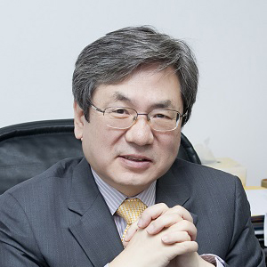

Speakers

Korea Advanced Institute of Science and Technology
Soo-Young Lee
Professor of Electrical EngineeringKorea Advanced Institute of Science and Technology
Nikola Kasabov
Professor of Computer Science and Director KEDRIAuckland University of Technology

Irwin King
Associate Dean (Education), Faculty of Engineering and Professor at the Department of Computer Science and EngineeringThe Chinese University of Hong Kong

Simon James Fong
Associate Professor at Department of Computer and Information ScienceData Analytics and Collaborative Computing Laboratory
University of Macau, Taipa, Macau SAR

Weng-Kin Lai
Associate Professor at Department of Electrical & Electronic EngineeringTunku Abdul Rahman University College